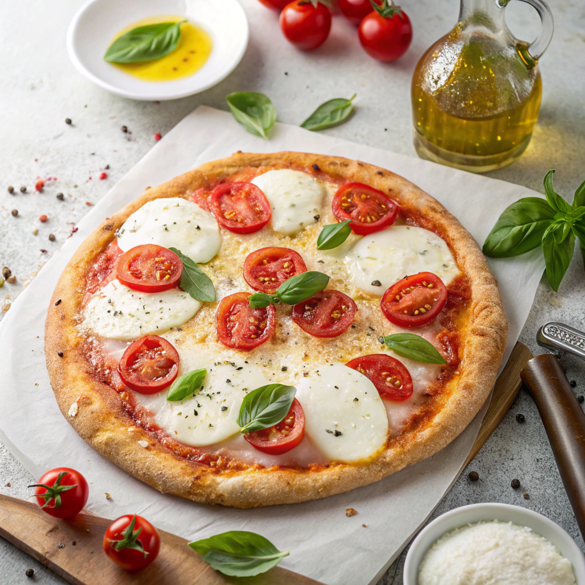

Classic Margherita Pizza

Description
The Classic Margherita Pizza embodies the simplicity and perfection of authentic Italian cuisine. With a harmonious trio of tomato sauce, fresh mozzarella, and basil, this pizza offers a burst of flavors that is both refreshing and satisfying. The high-temperature baking ensures a crispy crust that complements the melted cheese and the vibrant taste of the tomatoes.
Ingredients
- 1 pizza dough (store-bought or homemade)
- 1/2 cup tomato sauce
- 8 oz fresh mozzarella cheese, sliced
- Fresh basil leaves
- Olive oil
- Salt and pepper
Instructions
- Preheat your oven to the highest temperature (usually around 500°F or 260°C) and place a pizza stone inside if you have one.
- Roll out the pizza dough on a floured surface to your desired thickness.
- Transfer the dough to a pizza peel or baking sheet, then spread the tomato sauce evenly over the dough, leaving a small border for the crust.
- Arrange the mozzarella slices on top of the sauce and drizzle with a little olive oil. Season with salt and pepper.
- If using a pizza stone, carefully slide the pizza onto the hot stone in the oven. If using a baking sheet, place it in the oven.
- Bake for 10-15 minutes, or until the crust is golden and the cheese is bubbly and slightly browned.
- Remove from the oven, scatter fresh basil leaves over the top, and serve immediately.
Homepage